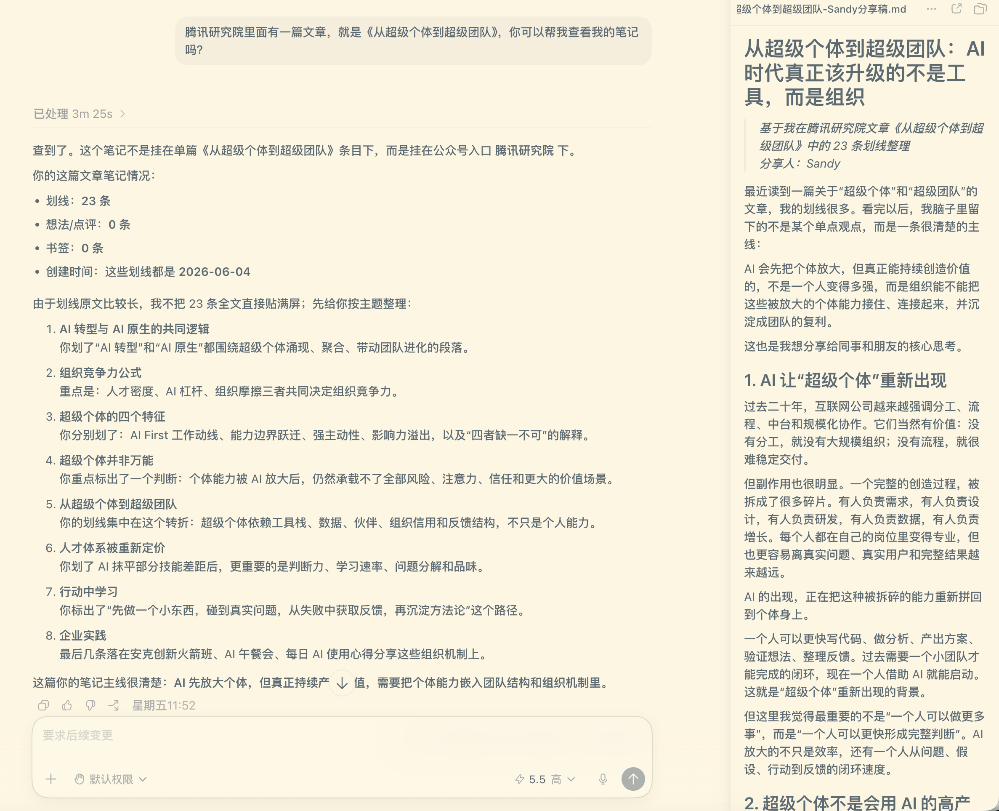
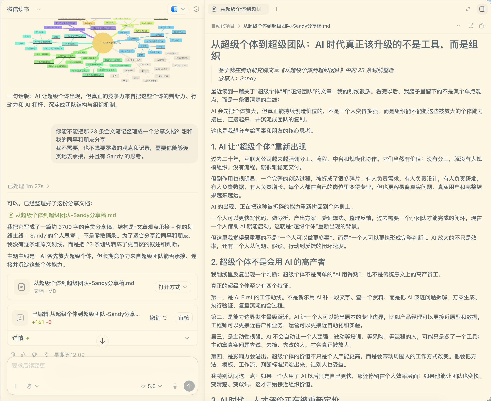
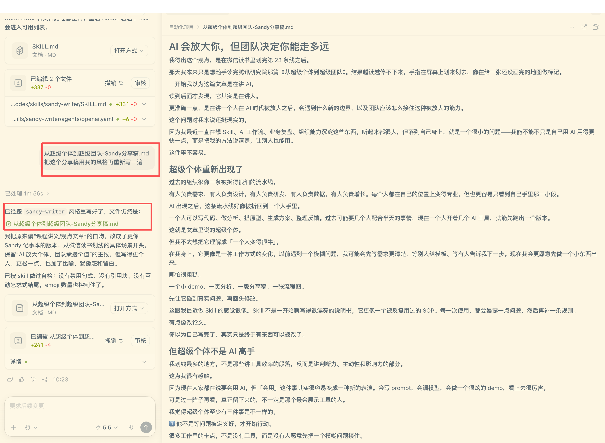

很多办公任务不是一次性的：整理数据、写周报、做复盘、筛选达人、生成脚本、输出汇报、追踪行动项。如果每次都重新解释背景、重新写提示词，效率会提升一点，但你的方法论没有留下来。
适合一次性任务。你每次都要重新解释背景、格式、口径和质量标准。
适合重复任务。把流程、参考资料、脚本和模板固定下来，Codex 可以持续复用。
Skill 是一个小型能力包。它里面既有主流程说明，也可以放业务口径、参考资料、固定模板、脚本和输出样式。它让 Codex 不只是“帮我写东西”，而是按照一套稳定方法来完成任务。
告诉 Codex 遇到这个任务时，应该按什么步骤做。
把字段定义、判断标准、分析框架和案例资料放进去。
把报告结构、HTML 模板、输出格式和脚本固定下来。
你可以把 Skill 想象成一个“业务工具箱”：`SKILL.md` 是总指挥，`references/` 是业务知识库，`assets/` 是交付模板，`scripts/` 是稳定执行工具。
SKILL.md总指挥：什么时候使用、解决什么问题、按什么流程工作。references/业务知识库：字段口径、诊断框架、判断标准和案例。assets/交付模板：报告模板、看板模板、样式文件和示例素材。scripts/稳定工具：处理重复、稳定、容易出错的计算或转换。agents/openai.yaml展示信息：界面里这个 Skill 叫什么、能做什么。README / examples辅助说明：给人看的安装、用法和示例。拿到一个 Skill 后，不要急着期待它解决所有问题。先确认它能做什么、不能做什么，再从一个小任务开始试用，最后根据自己的业务场景继续迭代。
WeRead Skill 的边界很清楚：它能帮你找到书架、阅读数据、划线和笔记。但如果目标是做一篇分享稿，就不要停在“把笔记找出来”。继续让 Codex 基于这些素材做结构化整理，才是 Skill 真正进入工作流的方式。



Skill 的价值不是“多一个提示词”，而是把原本依赖个人经验的做法固定下来。一个人从反复解释需求，变成调用一套稳定方法；团队从各做各的，变成可以复用同一套业务标准。
同一个周报、复盘或分析任务，每次都要重新交代背景、口径、格式和风格。结果经常不稳定，换一个人来做，输出又变了。
把业务 SOP、判断标准、参考案例和输出模板写进 Skill。下次只要给输入材料，Codex 就能按同一套方法稳定执行。
我会优先选择那些“高频、稳定、有标准、需要复用”的任务来做 Skill。如果任务非常随机、没有固定输入输出，先用普通 Prompt 就够了。
不用一上来就写完整 Skill。先写一份 Skill Brief，把边界、输入、流程、输出和质量标准说清楚，再交给 Codex 进一步生成文件包。
| 01 场景名称 | 例如：周报生成、投放复盘、竞品价格监控、会议纪要整理。 |
| 02 输入材料 | 列出需要哪些表格、文档、截图、链接或历史案例。 |
| 03 分析流程 | 写清先做什么、再做什么、哪些判断必须出现。 |
| 04 输出模板 | 定义最终交付物：报告、看板、话术卡、邮件、PPT 或 HTML。 |
| 05 质量标准 | 明确什么叫好结果，哪些错误不能出现，哪些口径必须遵守。 |
这些例子可以帮大家建立一个感受：Skill 不只是在本地写文件，也开始连接真实 App、真实服务和真实业务流程。下面按场景分组整理，Skill 名称已内嵌官方链接。